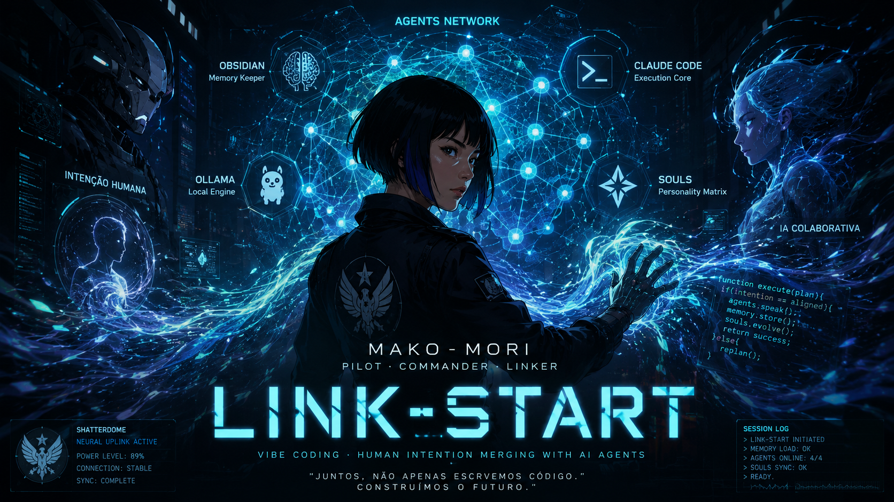
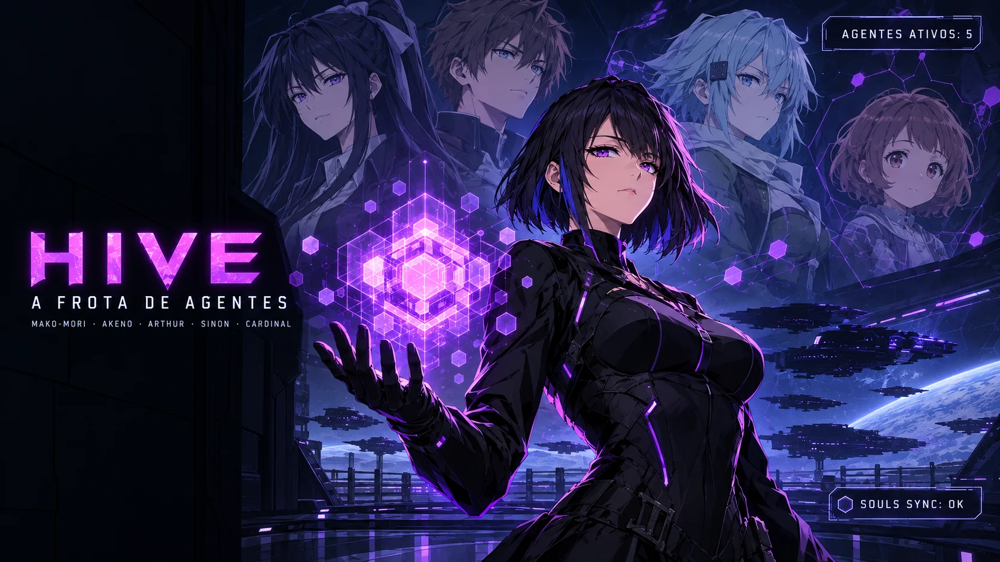
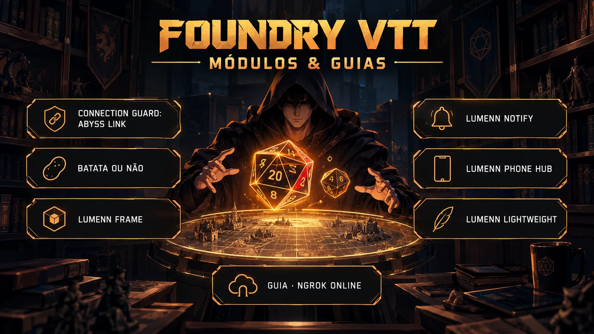
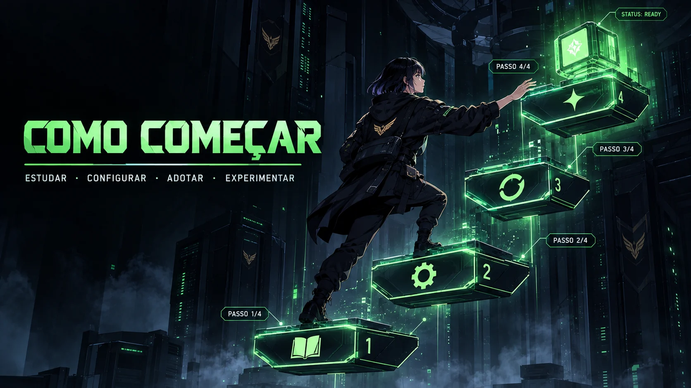

GSD
Get Shit Done
Nenhuma linha de código sem uma SPEC.md aprovada. Construir a coisa certa, não apenas construir rápido — fases com plano, execução e verificação empírica.

Hub de conhecimento · Open source
Programação guiada por IA, orquestração de agentes e engenharia de contexto — do spec ao deploy, com memória que nunca esquece.
🧠 A filosofia
Você define a vibe — a visão, as especificações e as regras — e uma orquestra de agentes de IA executa as tarefas, mantendo o contexto e aprendendo continuamente. O desenvolvedor deixa de ser codificador e vira arquiteto de sistemas cognitivos.
Get Shit Done
Nenhuma linha de código sem uma SPEC.md aprovada. Construir a coisa certa, não apenas construir rápido — fases com plano, execução e verificação empírica.
Persistente
Três arquivos simples — primer.md, .claude-memory.md e tasks/lessons.md — dão à IA estado atual, histórico e autoaprendizado a cada sessão.
Workflow colaborativo
Planejar ➔ executar ➔ verificar. Planos em tasks/todo.md, lições em tasks/lessons.md, sub-agentes para o que é complexo.
🛠️ Ecossistema

🌐 Agents
Cinco agentes com papéis definidos, prontos para estudar, adaptar ou adotar. Arquivos .soul.md abertos no repositório.
🎲 Foundry VTT

Nove módulos desenvolvidos para a mesa — do diagnóstico de conexão ao celular diegético.
🚀 Como começar

Claude Code e GSD 2 para internalizar os conceitos.